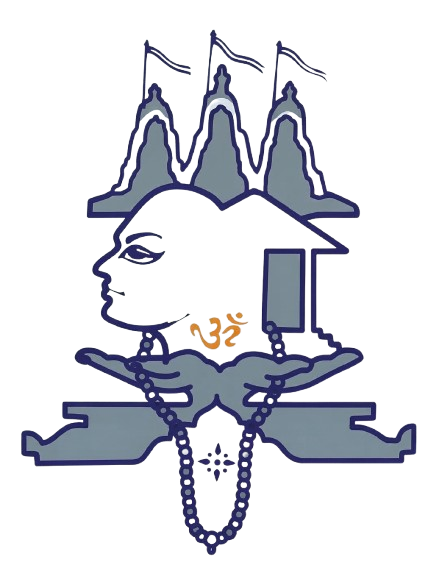

Nav · <SiteNav theme="light|night">

P.K. SompuraStone WorksHoverCurrentFocusP.K. SompuraDefaultHoverFocus
Light hover = saffron-text (4.80:1); night hover = saffron (6.53:1). Current page = underline, offset 6. On night the logo sits on the sand arch plate. Below lg: logo + name + Menu button, 64 px; see Board 04 for the Staggered Menu.
SectionHeading · <SectionHeading eyebrow size="xl|h2|h3" theme cut>
Line of work 01 / 03Stone Works
Line of work 03 / 03Fero Works
Variants: light-cut (Masked Heading fill), light-plain (navy), night (sand with a cut shadow). Eyebrow optional; "Line of work 0n / 03" is the ChapterMarker variant [A6]. Motion: Split Text or Masked Heading, per section.
NumberStat · <NumberStat value={51} suffix="+" label>
51+Projects completed
5CNC machines, owned · mobile row
The final value is rendered in the HTML; Count Up only animates from 0 once hydrated and in view. Values: 3 · 51+ · 5, and nothing else. Rules on stone: deep slate.
RegisterRow · Flowing Menu
10Godiji DerasarTharad, Gujarat
Godiji DerasarTharad, GujaratJain derasar
States: default · hover/focus band (with photo thumbnail / without) · focus-visible outline · mobile collapsed · expanded with photo · expanded without photo (TypeCard). All live on Board 02. Desktop 96 px tall, mobile ≥ 76 px.
TypeCard · <TypeCard size="row|page"> (no-photo project)
Register entryNo. 13
Jaliya
Jaliya, Gujarat · Jain derasar
Fields: no. (collection index), name, place + state, type, scope tags. The dentil course is 12 squares on mobile and 24 on desktop. Size "row" is used in mobile expand; size "page" puts the name at 200 px and replaces the photo gallery. It is never a grey box and never says "no image".
PhotoFrame · <PhotoFrame shape="arch|rect" tone="light|night" ratio>
Arch · rect · night · Glare Hover (desktop, sand sheen 25%). Use <picture> with AVIF + WebP at 480/960/1600/2400 w, explicit width and height (CLS), lazy below the fold, alt = project + view. Caption: mono 13, deep slate. States: reveal (mask grows from the bottom) · hover glare · focus (when it is a link) = 2 px navy outline, offset 4.
ScopeTag · FilterChip
Tag · light
Tag · sm
Tag · nightFero · night
Chip default
Hover
Selected ×
Focus
Tags are static labels (a span). Chips are <button aria-pressed>, 40 px tall on desktop and 44 px on mobile. Scope values: Design · Hand carving · CNC · Construction · Fero / mountain. There is no disabled state: a chip that would give 0 results stays active, and the empty state explains.
Button · <Button variant="primary|secondary|link" theme>
Primary
Primary hover
Secondary
Secondary hover
Focus
Text link →
Link hover
Night primaryNight secondaryFocus
Height 52, padding-x 24, Hanken 500 16, radius 0. On mobile, buttons are full width. Pressed: translateY(1px). Transitions: 150 ms ease on colour only.
StackPlate · ContactRow · Footer (night)
Phone+91 92278 66635
P.K. Sompura© P.K. Sompura · no year
StackPlate: navy, 1 px slate top rule, 440 px desktop, content-height mobile. ContactRow: <dl>, and the value is a tel:/mailto:/https link with a 44 px hit area. Footer: sand logo plate, name, line, links, © with no year (no dates on the site).
PosterFrame · <Scene3D poster="…" chunk="relief|mountain">
An <img> poster always sits in the HTML (fetchpriority=high for the hero). The island loads three.js only if: WebGL2 is present, prefers-reduced-motion is not set, Save-Data is off, deviceMemory ≥ 4 and the section is within 1 viewport. The canvas fades in over the poster (600 ms) after its first frame, and rendering stops when it is off-screen. Keyframes: Board 05.